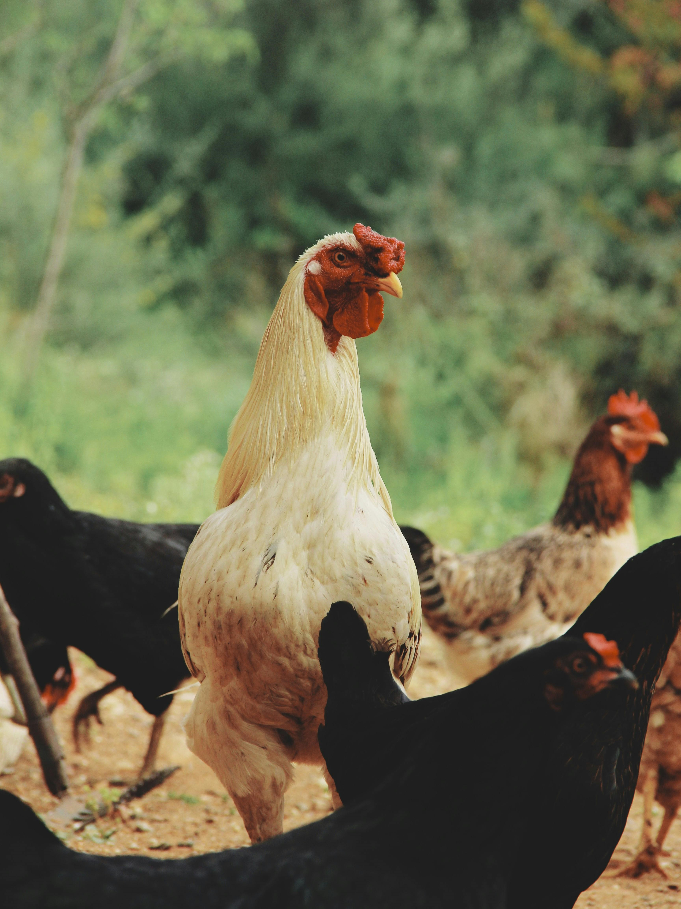
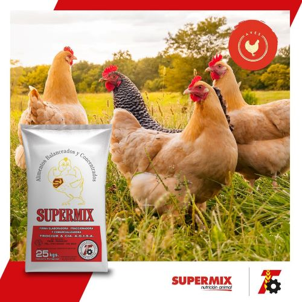
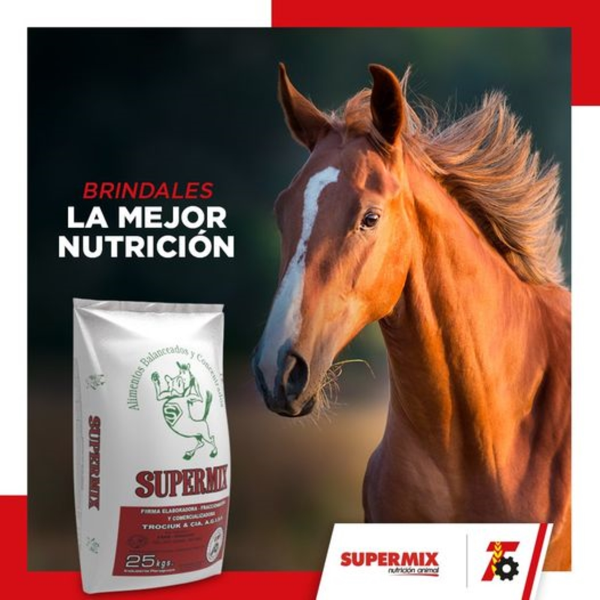
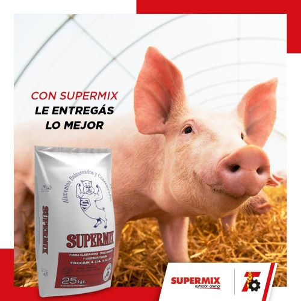
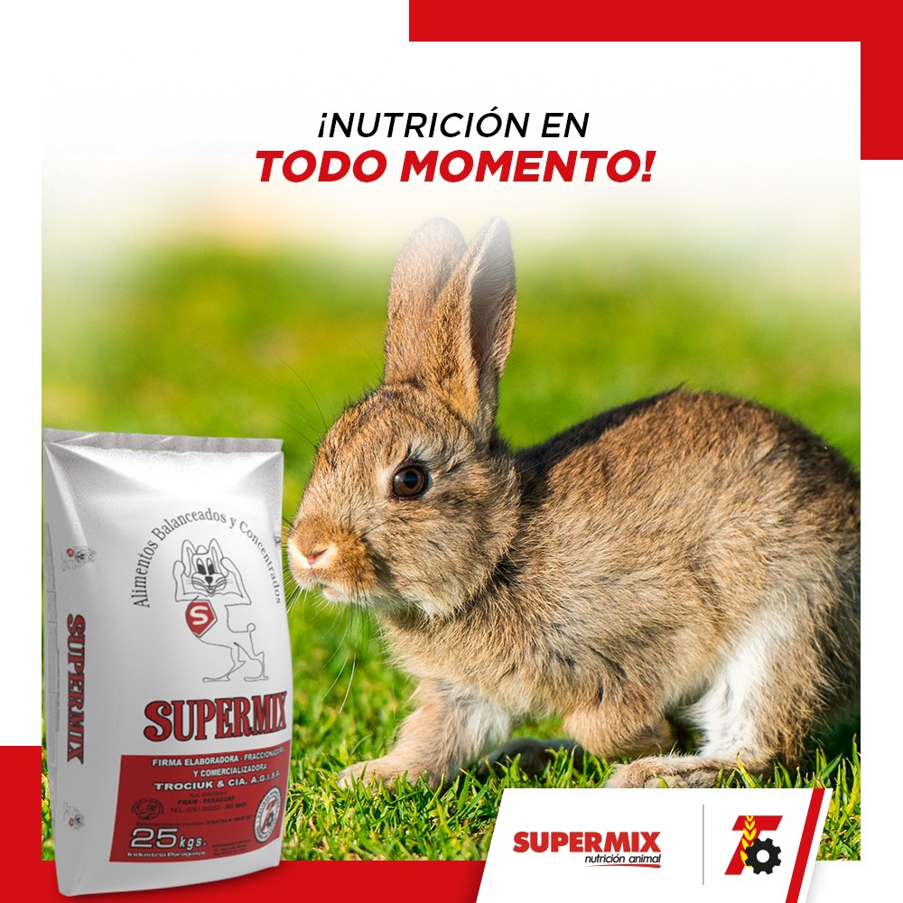

Alimentos Balanceados
Contamos con Alimentos Balanceados para cualquier especie de animal, además de productos para mascotas.
Ver ProductosProductos Destacados

Aves Ponedoras Iniciador
Mezcla nutricional balanceada y peletizada lista para consumo directo.
Especialmente
formulada para atender los requerimientos nutricionales
diarios de las aves ponedoras en etapa inicial
de vida.

Potro
Alimento balanceado y peletizado, especialmente formulado para atender
y completar los
requerimientos nutricionales diarios de potros.

Terminador
Mezcla nutricional balanceada y peletizada, lista para su uso directo en
cerdos, en etapa
de engorde hasta la faena.

Conejos
La cría de conejos es otra de las opciones que tiene el granjero para
buscar rentabilidad
en su propiedad.La misma puede tener diversos fines,
como ser la producción de carne, pieles o venta de
mascotas.